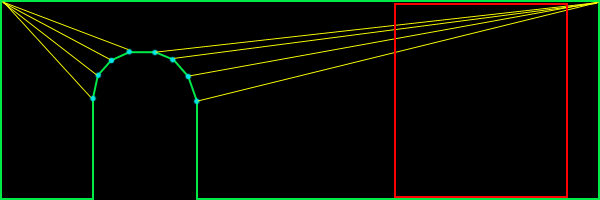
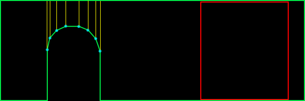

|
Merging Polygons And Sub-Pixel Gaps
Question submitted by (27 March 2001)

|
 |
|
 |
| |
My BSP/PVS compiler does CSG on all brushes before BSP-ing to remove all the
"illegal geometry" (caused by intersecting and touching brushes). This
causes a LOT of splits. It doubles the polycount. When I look at the
wireframe shots I can see a lot of faces can be merged.
How do I know when 2 faces are convex forming and more important: how do I
merge them?
My second problem is: sub-pixel gaps caused by T-junctions. How can I find
and correct those gaps?
I thought of the following but for some reason it
doesn't work:
for each vertex in world
{
for each poly in world
{
if distance between vertex and closest point on
polygons perimeter < some small value
{
move vertex to edge
}
}
}
|
Any help would be appreciated,
Dennis Meffert
|
|
 |
|
 |
 |
|
|
| |
Hi Dennis,
Two excellent questions! The first question, in particular, I've been
waiting for somebody to ask (I even hinted around about it in a previous
response.) The second question is actually the last phase to the solution
for the first. Confused? :)
To clarify your first question, what you're really asking is how to
automatically "optimize" a set of polygons. The answer to this is
non-trivial. Fortunately, it's on my list of "documents to write when time
allows." Unfortunately, time doesn't look very forgiving for me in the near
future, so I'll run through the important points here, and skip the details.
It's been a long time since I had to do this (before my TRI days), so I beg
your pardon in advance for anything I may overlook.
DEFINE THE GOAL
Don't get lost in your problem of "merging polygons" - that's only a part of
the problem. I'm going to attack it in terms of optimization. This is not to
be confused with LOD reduction. We want to keep the exact same topography
for the scene, but we just want to do it in fewer polygons.
When I originally set out to do this, my goal was to find "the most optimal
set of convex n-gons from a set of polygons." Let's pull that statement
apart. I realize this sounds over-dramatic, but please bear with me. The
three parts are "most optimal set" and "convex n-gons" and "set of
polygons". I'll cover the last two first, because they're quickest.
Obviously, "convex n-gons" means just what it says. I chose to go with them
because, at the time, it was best (and I'm still convinced that they're good
to go for the current state of things.)
When I say "set of polygons", I mean set of any kind of polygon. I
didn't actually intend on handling any kind of input polygon, but as it
turns out the technique allows for complex input polygons.
Now about that "most optimal set" bit. What does this mean, and to whom? No
I'm not trying to act like a psychologist, I really mean it. For example, I
might optimize the set into the fewest possible polygons, which would speed
up my pipeline. However, this doesn't necessarily always get you the best
frame rate.

In figure 1,we see a standard wall with an archway. This shape is
represented with 9 polygons (12 triangles.) Take special notice of the red
square. This is the portion of the surface that is within the frustum (or
not occluded by something.) In this case, I count a minimum of 5 polygons (6
triangles) inside the frustum.

In figure 2, we see a much different approach. This shape is also
represented by 9 polygons, but 18 triangles (as opposed to 12 triangles in
figure 1.) However, there is only one polygon (2 triangles) in the frustum.
Obviously, it depends on what is being viewed as to whether or not there is
a savings in going with the way figure 2 has things laid out, but in
practice, I found this way to be better than the standard solution. This is
especially true for highly occluded scenes.
OVERVIEW
In short, you have to completely rebuild your scene. Anything less would
simply be an incomplete solution. The advantage to doing so is that your
scene gets completely optimized.
The steps are as follows:
1. Completely rebuild the scene into complex polygons
2. Split the whole scene up using whichever "best fit" solution you want
3. Remove t-junctions
STEP 1: HOMOGENIZE
Step 1 is really the most involved. Notice that step 1 uses complex
polygons, not convex polygons. This means that polygons can be concave and
can also have holes. The only limitation I place on this, is that they
cannot have crossing edges. Also, note that they will need to be correct
complex polygons (i.e. the winding order of the vertices in the holes go
opposite to the winding order of the exterior vertices.) This may sound
difficult, but its not too bad, really, if you're careful.
Step one actually starts by removing t-junctions. But since I'm going to
cover them in step 3, I'll not waste the space here. Just know that the
whole process starts and ends with t-junction removal.
Start by choosing a polygon (it doesn't matter which.) Put the vertices into
an ordered list. If your input polygon is a triangle, you'll have three
vertices in your list: A->B->C. Remember, this list represents vertices, so
it should be treated like a circular queue (i.e. A -> B -> C -> A ...) Now
throw that polygon away; consider it "processed."
We're going to be building on this list of vertices, adding vertices to it
until we have a complete polygon and we can find no more polygons that share
edges with it. In order for a polygon to be considered for merging, we need
to make sure that the polygons have the same properties. For example, the
two polygons must be coplanar. They must have the same material applied to
them, etc.
So let's start merging. Find a polygon that shares an edge with our vertex
list (ABC.) Remember, sharing edges go the opposite direction. You would
naturally think that two polygons with the same winding order would be
shared in the order they appear. For example, polygon ABC and polygon DEF
might share BC with EF. In reality, it's BC shared with FE. Here's an
example of two polygons sharing an edge:
When you find a polygon that shares an edge (and shares the same surface
properties), it's time to merge them. Simply delete the two vertices from
polygon DEF that were shared with the vertex list. This would delete E and
F, leaving us with D. If your input set is more than triangles, you will
have more vertices left over. Insert the remaining vertices (in this case,
just D) into the list between the two vertices that were shared (in this
case, between B and C.) Now throw away the polygon that was just merged and
consider it "processed." Our new list now is A->B->D->C.
Continue this process until you find no more shared edges. At that point,
you'll have your first (potentially complex) polygon. Pick another polygon
(any polygon will do) and start over. Lather, rinse, repeat.
Before I go on to step 2, let me briefly point out a few common gotchas (at
least, the ones I can remember.) First, if your input data has a lot of
garbage in it (as was most of the archaic 3DS file stuff I was working
with), you might run into some degenerate polygons (i.e. polygons that are
infinitely thin) or polygons that are multiply defined (i.e. three vertices
used to define two identical polygons with the same normal.) These can
really trip you up, so be careful, and use lots of ASSERTS.
STEP 2: SPLIT IT UP
At this point, you have no more polygons; they've all been merged into a
bunch of vertex lists (which, in effect are still polygons, but lets think
of them as lists for now.) How we proceed from here, depends on which best
fit solution we want to go with. I'm going to stick to what I know, Monty,
and go with what's behind figure #2. After reciting a short prayer to the
deity of computational geometry, we're ready to begin (no, that doesn't
actually help, but the chicks dig it. =)
We're going to be working with one list at a time, splitting them each up
into usable polygons. For this, we'll need a concavity test and an area
calculation that works with complex polygons. You'll find them in the
appendices (?!) at the end of this document. We want to split up these
polygons until we get a "best set" of convex n-gons. If you want triangles
in the end, then you'll have to take that last step on your own (there are
plenty of references out there that cover this.)
If the list of vertices defines a convex polygon, consider it finished.
Otherwise, we'll need to split it up. This process begins by selecting an
edge (two consecutive entries in the list) from the list of vertices. We'll
attempt to split the polygon by that edge. Here's an example:
In this example, we have two possible splits. Notice that if we tried to
split by any other edge, the polygon would remain whole. We'll be testing
each possible edge for a split. We don't want to stop when we find one that
works; remember, we want a "best fit" solution. What we're looking for is
the split that results in the single, largest, valid fragment. Looking at
figure four, we see two potential splits. On the left, we find a split that
results in a very small fragment and a larger fragment; we'll keep track of
the area of the larger fragment. On the right, we see another split. If we
calculate the areas, we'll find that the area of the larger fragment is not
as big as the larger area of the previous split. I sure hope that's not too
confusing.
Once we've tried all possible splits for this polygon, we go back to the one
that resulted in the largest fragment. It is now safe to throw away our
current list of vertices and replace it by the two smaller fragments.
Next, go back up a few paragraphs to the point where I said, "If the list of
vertices defines a convex polygon..." and (you know the drill) - lather,
rinse, repeat.
So, how do you split a complex polygon? This actually goes beyond the scope
of this document, but there are plenty of references on the net. Paul
Bourke's home page (http://www.swin.edu.au/astronomy/pbourke/) is a good
place to start.
STEP 3: REMOVE T-JUNCTIONS
If you've made it this far, you've probably noticed that we've completely
munged our world geometry (twice!) in order to completely reconstruct it. At
this point, we've got a terribly optimized database, but filled with a lot
of t-junctions, because of the way we've split up the polygons. No problem,
step 3 to the rescue!
I've done t-junction removal two ways in the past. Take a peek at figure 5:
On the left, we have the standard "split it up" and on the right, we have
the "slide". These aren't dance moves, they're just lame names I come up
with for stuff when I'm bored.
Splitting it up is really straight forward, but ends up with an extra
polygon. Occasionally, however, you can slide a vertex to collapse two
polygons into one. It's usually a good idea to do this whenever possible,
because in this case, fewer polygons is always the best. Note that you can
only slide a vertex when the two polygons being collapsed are coplanar (and
share the same surface properties, don't forget!)
We must first detect when a vertex is the source of a t-junction. Looking
closely at either half of figure 5, notice how the two polygons share two
vertices, but not an edge. This is a great trivial rejection test. If
you don't find this to be the case, then you're guaranteed not to have a
t-junction with these two polygons. Otherwise, we need to test for a
t-junction. Testing for a t-junction involves ignoring all vertices that are
shared and testing the remaining vertices to see if they lie on the edge
defined by the opposite polygon.
How do you determine if a point lies on the edge? Here's a simple way (there
are more efficient solutions, but this one, at least, is pretty simple):
Calculate the vector of the edge and then calculate the vector from one
point on the edge to the vertex being tested. Normalize them and then take
the absolute value of their dot products. If that value is within a
tolerance to 1.0, then the vertex lies on the line defined by the edge. The
only thing left to do, is to determine if the vertex is between both edge
points. You can do this, by creating two vectors (one from each endpoint of
the edge, pointing at the vertex) and see if they point at one another. For
those purists out there, you'll find a more efficient solution on Paul
Bourke's page.
Once we determine that there is, in fact, a t-junction, we can split the
opposing polygon. This is as simple as inserting the source t-junction
vertex into the opposing polygon (between the two edge vertices) and
replacing that polygon with the two pieces. This is all just simple vertex
manipulation, but what about sliding?
Sliding involves a little bit of extra work. As a matter of fact, it's a lot
trickier than I expected to explain, and since I'm already on page four or
five of this response, I'm going to totally bail on this one and leave it up
as an exercise to the reader. :) Actually, if somebody is interested, send
in another question and I'll cover it.
That pretty much covers the topic, but we've still got some loose ends to
clean up...
APPENDIX A: CONCAVITY TEST
The way I've always done concavity testing was quite simple. I would build a
plane out of each edge. You can do this, by taking the cross product of the
polygon's normal and the edge-vector. This gives you an "edge-plane" normal.
An edge plane is that plane, which is defined by the two endpoints of the
edge, and perpendicular to the polygon.
If you were to attempt to bisect the polygon on all of its edge planes, what
would happen? If the polygon was convex, nothing would happen. So we test
for this. The quick and dirty answer is to simply visit each edge-plane and
test each vertex to make sure they're all on the same side. If not, then the
polygon is not convex.
APPENDIX B: AREA CALCULATION FOR COMPLEX POLYGONS
We need an area routine that works for complex polygons. I found a fantastic
little ditty in CGP&P that worked for 2D polygons, and extended that to 3D.
It's fast, and very accurate:
areaXY = 0;
areaYZ = 0;
areaZX = 0;
for (each edge)
{
areaXY += (edge1.x + edge0.x) * (edge0.y - edge1.y) / 2;
areaYZ += (edge1.y + edge0.y) * (edge0.z - edge1.z) / 2;
areaZX += (edge0.x + edge1.x) * (edge1.z - edge0.z) / 2;
}
area = sqrt(areaXY * areaXY + areaYZ * areaYZ + areaZX * areaZX);
|
CLOSING
I should warn you that this is not trivial code to write. This is the kind
of code that can be pretty hairy without good debugging tools and
techniques. I remember actually writing a mini-debugger for this that would
render the polygons (perpendicular to their plane) to a series of image
files, so I could investigate what was happening along each step of the
process. When I eventually tackle this again (and I will -- it's already
been scheduled), I'll be sure to publish the source code to it.
In my experience, I've seen this algorithm (or something very similar to it,
depending on how true my recollection really is) generate, on average,
greater than 50% polygon reduction, with similar improvements to my frame
rates. Personally, I would consider that well worth the effort.
Response provided by Paul Nettle
|
|
|
|
|
This article was originally an entry in flipCode's Ask Midnight, a Question and Answer column with Paul Nettle that's no longer active.
|

 Area calc...
Area calc...

 Re: Merging Polygons And Sub-Pixel Gaps by Mahoo
Re: Merging Polygons And Sub-Pixel Gaps by Mahoo